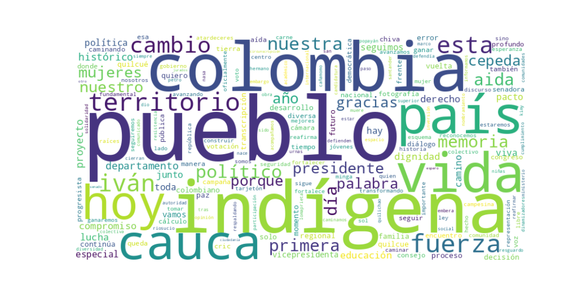

Seguidores: 103,122
1. Perfil de Comunicación: El estilo de comunicación es predominantemente informal, cercano y arraigado en la identidad comunitaria. Utiliza un lenguaje popular, emotivo y cargado de simbolismo cultural, alejándose deliberadamente de un discurso técnico o burocrático. La comunicación se estructura en torno a la oralidad y la tradición indígena, empleando metáforas orgánicas ("caminar la palabra", "semillas de la tierra") que buscan crear una conexión visceral y de pertenencia. Es un discurso que habla desde y para el territorio, posicionando a la candidata no como una figura distante, sino como una voz colectiva y un puente entre las comunidades y la política nacional.
2. Temas Principales: * Defensa de la Vida, el Territorio y los Pueblos Étnicos: El eje central de su discurso. Aborda la protección física de líderes sociales, la defensa de la tierra contra megaproyectos (ej. represa de Urrá) y la garantía de derechos colectivos. Ejemplo: Exige investigación por el asesinato de la autoridad indígena Albino Cañas y denuncia el desplazamiento del pueblo Embera. * Educación Propia y con Enfoque Territorial: Reivindica la educación como pilar de la autonomía y la paz. No habla de educación en abstracto, sino de cumplir compromisos específicos (nombramiento de docentes dinamizadores del CRIC) y de una reforma que financie la universidad pública. * Continuidad del "Gobierno del Cambio": Enmarca su candidatura vicepresidencial como la garantía de continuidad y profundización del proyecto del presidente Petro. Celebra logros concretos del gobierno (ley de financiación de la educación superior, APP vial) y usa constantemente el eslogan "el cambio continúa". * Memoria, Verdad y Justicia: Vincula la lucha actual con el legado histórico de víctimas y luchadores sociales. Ejemplo: Conmemora a Kimy Pernía Domicó y a las víctimas del conflicto, transformando el recuerdo en "un llamado urgente a tomar acciones". * Fortalecimiento de la Organización Social y la Democracia Participativa: Promueve la movilización, el respaldo a candidaturas como la de Iván Cepeda y denuncia obstáculos a la participación (falta de tarjetones indígenas en elecciones). Valora espacios como mingas, foros y encuentros de diálogo colectivo.
3. Tono y Sentimiento Dominante: El tono es esperanzador y de resistencia firme, con una base de reivindicación crítica. Combina un profundo sentido de dignidad y orgullo cultural con denuncias concretas de violencia, injusticia e incumplimientos. Es un discurso propositivo que plantea la organización popular y la "lucha por la vida" como camino, pero siempre partiendo de una crítica a un status quo histórico de abandono y violencia contra los territorios. Predomina la convicción sobre la duda.
4. Palabras Clave de Poder: * "Caminar la palabra" (compromiso, acción coherente). * "El cambio continúa" (continuidad del proyecto petrista). * "Vida, territorio, dignidad" (trinidad conceptual central). * "Pueblo(s)" / "Pueblos" (sujeto político colectivo). * "Memoria" (legado histórico y herramienta de lucha). * "Minga" (acción colectiva y organizada). * "En primera (vuelta)" (objetivo electoral y muestra de fuerza).
5. Conclusión Estratégica: La estrategia de comunicación de Aída Quilcué busca consolidar una base electoral que trasciende lo indígena para representar a las "Colombias profunda y excluida": comunidades étnicas, campesinas, víctimas del conflicto y movimientos sociales regionales. Su discurso no apela al individuo, sino al colectivo organizado. Busca evocar un sentimiento de pertenencia, resistencia histórica y esperanza activa, presentando la fórmula Cepeda-Quilcué como la encarnación política de esa lucha y su única garantía de continuidad. Posiciona la elección no como un simple cambio de administración, sino como un momento decisivo para "no retroceder" y profundizar un proceso de transformación desde los territorios.
Reporte de Análisis Estratégico: Corpus de Éxito en Comunicación Digital
1. Resumen del Patrón de Éxito: El contenido más exitoso del candidato no se basa en discursos técnicos o enumeraciones programáticas, sino en la construcción de una narrativa identitaria y emocional poderosa. Su fórmula combina la poesía social con un mensaje de lucha y reivindicación, posicionándolo no como un político tradicional, sino como la encarnación ("el desarrollo en carne viva") de comunidades históricamente excluidas. El éxito radica en transformar la política en un relato épico y personal, donde él y su fórmula son el símbolo vivo de la resistencia y la esperanza de "los que quedaron".
2. Tácticas de Comunicación Clave: * Encarnación y Símbolo Viviente: No habla en nombre de, sino que se presenta como el pueblo. Frases como "Soy todas las obras de lo que se robaron", "Soy una fábrica de humo, mano de obra campesina para tu consumo" o "Soy la fotografía de un país" lo construyen como un símbolo antropomórfico del territorio, su historia de abandono y su lucha. * Narrativa de Confrontación Épica: Define claramente un "nosotros" (el pueblo, los excluidos, las víctimas, los pueblos étnicos) frente a un "ellos" implícito (un pasado de violencia, un sistema que roba y excluye, "los fachos de la ultraderecha"). La lucha política se enmarca como un capítulo más de una larga resistencia histórica. * Lenguaje Ritual y Comunitario: Emplea un tono que mezcla la proclama política con la arenga espiritual y comunitaria. Términos como "caminar la palabra", "honrar la memoria", "agradecer a los espíritus de la tierra" y el uso recurrente de "pueblo(s)" y "hermano(s)" apelan a un sentido de pertenencia que trasciende lo electoral. * Apelación a la Esperanza Activa: La emoción final no es el resentimiento, sino una esperanza combativa y organizada. Se evoca un futuro ("un futuro en paz", "el segundo gobierno progresista") que se construye activamente con "valentía", tomando "posición" y, crucialmente, votando.
3. Temas de Mayor Resonancia: * Memoria y Víctimas del Conflicto: El llamado a "recordar para no repetir" y honrar a las víctimas genera una profunda conexión emocional. * Representación y Defensa de los Pueblos Étnicos: La denuncia de la exclusión (ej. tarjetones indígenas no disponibles) y la celebración de su propia candidatura como logro identitario son motores clave de engagement. * Defensa de los Derechos de las Mujeres: El respaldo a leyes contra la mutilación genital femenina y la presencia fuerte de su fórmula vicepresidencial, Aida Quilcué, conectan con una agenda feminista concreta. * La Educación como Pilar de Paz: La celebración de logros en educación superior pública vincula la política social con el proyecto de paz, apelando a la juventud.
4. Perfil de la Audiencia Implícita: El discurso se dirige primordialmente a una base leal y movilizada que comparte los valores del "Gobierno del Cambio" y la izquierda progresista. Sin embargo, su tono inclusivo y épico busca también: * Jóvenes idealistas identificados con las luchas sociales y la defensa de minorías. * Comunidades étnicas y poblacionales históricamente marginadas que se ven reflejadas en su narrativa. * Votantes emocionales que buscan un relato político trascendente y con raíces culturales, más que un programa técnico. El lenguaje no está diseñado para convencer a un indeciso centrista con datos, sino para energizar y movilizar a una coalición identitaria.
5. Conclusión Estratégica: La clave fundamental del poder de su discurso es la mitificación política. Ha logrado desprenderse del formato discursivo racional-técnico tradicional para operar en un registro simbólico, casi lírico. No vende un programa de gobierno; encarna una epopeya colectiva. Lo que lo hace potente y diferente es que no comunica ideas, comunica una identidad. Su mayor fortaleza es convertir el voto en un acto de afirmación cultural y de continuidad de una lucha histórica, donde él y su compañera de fórmula no son simples candidatos, sino los "caminantes de la palabra" elegidos por ese pueblo. El riesgo estratégico es que este discurso, extremadamente efectivo para consolidar su base, puede tener un techo de alcance en sectores no identificados con esa épica particular.

Caption: En el marco del Día Nacional de las Víctimas del conflicto armado interno, honramos la memoria de más de 300 mil vidas que este doloroso capítulo, a lo largo de nuestra historia nos arrebató. Desde Tumaco, Nariño, alzamos la voz con dignidad y esperanza, reafirmando el compromiso de mantener viva la memoria como camino para defender la vida y evitar que el país regrese a un pasado marcado por la violencia y el sufrimiento. Porque recordar también es resistir, y en la memoria florece la fuerza para construir un futuro en paz.
Likes: 1,846 | Comentarios: 54 | Reproducciones: 15,757
Ver en InstagramCaption: Hoy en Comisión Primera del Senado aprobamos en unanimidad el proyecto de ley que prohíbe la mutilación genital femenina en nuestro país. Reafirmamos que estas prácticas NO hacen parte ni son cultura; por el contrario, han marcado el horror en la vida de niñas y mujeres en los diferentes rincones de nuestro País. Seguiremos impulsando y respaldando propuestas que permitan avanzar en más garantías y derechos para las mujeres de Colombia ✊🏽🇨🇴
Likes: 6,115 | Comentarios: 228 | Reproducciones: 53,360
Ver en Instagram